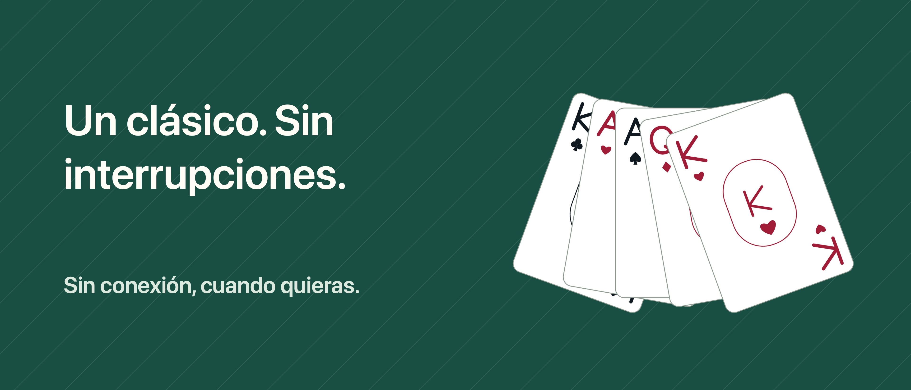

Solitario Unbound

Un momento para ti, carta a carta.
Tu momento con las cartas, sin interrupciones. Juega a Klondike robando 1 o 3 cartas, sin anuncios, cuenta IFG ni suscripciones.
DESHAZ Y VUELVE A INTENTAR Deshacer, rehacer y las pistas de movimientos legales son gratis. Arrastra las cartas o toca la carta y su destino. Elige Relax para ocultar el tiempo o Clásica para ver tiempo y movimientos.
UNA PARTIDA A LA QUE VOLVER Las partidas guardadas y las estadísticas se quedan en tu dispositivo. Elige una partida aleatoria o una disposición inicial con solución verificada y vuelve para el reto diario. No todas las partidas aleatorias tienen solución; tus decisiones también pueden bloquear una partida verificada.
MÁS VARIANTES CON PRO Una sola compra añade FreeCell, Spider de 1, 2 y 4 palos, el archivo de retos y más personalización: seis mesas, seis reversos y tres estilos de cartas en total. Sin pistas que comprar o gastar.
El juego funciona sin conexión. Comprar o restaurar Pro puede requerir internet y una cuenta de Apple. El progreso no se sincroniza entre dispositivos y puede perderse al desinstalar la app. Restaurar Pro no recupera el progreso eliminado.